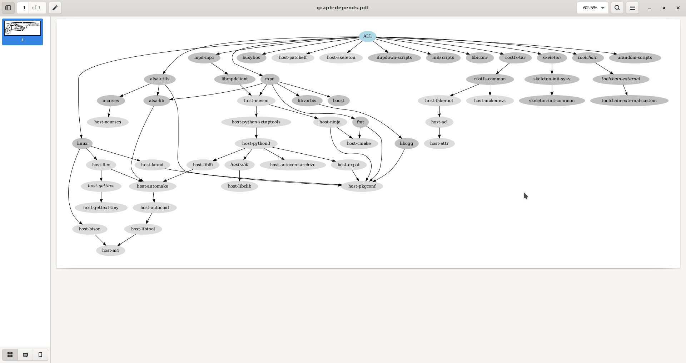

10. Buildroot
10.1 Objectives
- discover how a build system is used and how it works, with the example of the Buildroot build system.
Compared to the previous lab, we are going to build a more elaborate system, still containing alsa-utils (and of course its alsa-lib dependency), but this time using Buildroot, an automated build system.
The automated build system will also allow us to add more packages and play real audio on our system, thanks to the Music Player Daemon (mpd) and its mpc client.
Important note: because of the current sound playing issues mentioned before, this lab will be less exhaustive compared to our instructions on real hardware. You should be able to run the commands in the QEMU emulated machine though, proving that the tools were built correctly. So, we will build tools like mpd and mpc, but won’t test them because of the absence of sound.
10.2 Required tools
-
Ubuntu packages:
evincegraphvizplus those from the previous labs.
-
Buildroot, either as:
-
git repository tag
v2022.02
-
10.3 Source code
The official Buildroot website is available at https://buildroot.org/.
Let's clone the git repository, branching the 2022.02 release, which is a LTS (Long Term Support, we're just sticking to the original one), naming after this lab.
$ LAB_PATH="$HOME/embedded-linux-qemu-labs/buildroot"
$ cd $LAB_PATH
$ label="2022.02"
$ git clone https://git.buildroot.net/buildroot/
$ cd buildroot/
$ git checkout -b embedded-linux-qemu $label
Alternatively, you can download an archived version.
$ LAB_PATH="$HOME/embedded-linux-qemu-labs/buildroot"
$ cd $LAB_PATH
$ label="2022.02"
$ wget "https://git.buildroot.net/buildroot/snapshot/buildroot-${label}.tar.bz2"
$ tar xfv "buildroot-${label}.tar.bz2"
$ mv buildroot*/ buildroot
$ cd buildroot/
Several subdirectories or files are visible. The most important ones are:
-
bootcontains the Makefiles and configuration items related to the compilation of common bootloaders (GRUB, U-Boot, Barebox, etc.) -
boardcontains board specific configurations and root filesystem overlays. -
configscontains a set of predefined configurations, similar to the concept of defconfig in the kernel. -
docscontains the documentation for Buildroot. -
fscontains the code used to generate the various root filesystem image formats. -
linuxcontains the Makefile and configuration items related to the compilation of the Linux kernel. -
Makefileis the main Makefile that we will use to use Buildroot: everything works through Makefiles in Buildroot; -
packageis a directory that contains all the Makefiles, patches, and configuration items to compile the user space applications and libraries of your embedded Linux system.
Have a look at various subdirectories and see what they contain. -
systemcontains the root filesystem skeleton and the device tables used for a static/dev. -
toolchaincontains the Makefiles, patches and configuration items to generate the cross-compiling toolchain.
10.4 Configuration
In our case, we would like to:
-
Generate an embedded Linux system for ARM.
-
Use an already existing external toolchain instead of having Buildroot generating one for us.
-
Compile the Linux kernel and deploy its modules in the root filesystem.
-
Integrate BusyBox,
alsa-utils,mpd,mpcandevtestin our embedded Linux system. -
Integrate the target filesystem into a tarball.
To run the configuration utility of Buildroot, simply run:
Set the following options. Don’t hesitate to press the Help button whenever you need more details about a given option!
In Target options:
-
Target Architecture=ARM (little endian). -
Target Architecture Variant=cortex-A9. -
Enable
NEON SIMD extension support. -
Enable
VFP extension support. -
Target ABI=EABIhf. -
Floating point strategy=VFPv3-D16.
In Toolchain:
-
Toolchain type=External toolchain. -
Toolchain=Custom toolchain. -
Toolchain path=$(HOME)/x-tools/arm-training-linux-uclibcgnueabihf, which is the one we built. -
External toolchain gcc version=11.x. -
External toolchain kernel headers series=5.15.x. -
External toolchain C library=uClibc/uClibc-ng. -
Enable
Toolchain has WCHAR support?. -
Enable
Toolchain has SSP support?. -
Enable
Toolchain has C++ support?.
In Kernel:
-
Enable
Linux Kernel. -
Kernel version=Latest version (5.15). -
Defconfig name=vexpress. -
Enable
Build a Device Tree Blob (DTB). -
In-tree Device Tree Source file names=vexpress-v2p-ca9.
In Target packages:
-
Keep
BusyBox (default version)and keep the BusyBox configuration proposed by Buildroot. -
Under
Audio and video applications:-
Enable
alsa-utils, and in the submenu:-
Enable
alsamixer. You will be able to test this application too, and that will also pull thencurseslibrary, which we will also use in the next lab. -
Enable
speaker-test.
-
-
Enable
mpd, and in the submenu:- Keep only
alsa,vorbisandtcp sockets.
- Keep only
-
Enable
mpd-mpc.
-
In Filesystem images:
- Enable
tar the root filesystem.
Exit the menuconfig interface saving into the usual .config file. Also make a backup copy for reference.
10.5 Build
Just run the canonical make:
Buildroot will first create a small environment with the external toolchain, then download, extract, configure, compile, and install each component of the embedded system.
All the compilation has taken place in the output/ subdirectory. Let’s explore its content:
-
buildis the directory in which each component built by Buildroot is extracted, and where the build actually takes place. -
hostis the directory where Buildroot installs some components for the host.
As Buildroot doesn’t want to depend on too many things installed in the developer machines, it installs some tools needed to compile the packages for the target.
In our case it installedpkg-config(since the version of the host may be ancient) and tools to generate the root filesystem image (genext2fs,makedevs,fakeroot). -
imageswhich contains the final images produced by Buildroot. In our case it contains a tarball of the filesystem, calledrootfs.tar, plus the compressed kernel and DTB (Device Tree Binary).
Depending on the configuration, there could also a bootloader binary or a full SD card image. -
staging, which contains the "build" space of the target system, all the target libraries, with headers and documentation.
It also contains the system headers and the C library, which in our case have been copied from the cross-compiling toolchain. -
targetis the target root filesystem. All the applications and libraries, usually stripped, are installed in this directory.
However, it cannot be used directly as the root filesystem, as all the device files are missing: it is not possible to create them without being root, and Buildroot has a policy of not running anything as root.
10.6 Run the generated system
Go back to the $HOME/embedded-linux-qemu-labs/buildroot/ directory.
Create a new nfsroot directory that is going to hold our system, exported over NFS.
Go into this directory, and untar the rootfs.
$ mkdir -p "$LAB_PATH/nfsroot/"
$ cd "$LAB_PATH/nfsroot/"
$ tar xfv "../buildroot/output/images/rootfs.tar"
Add this new nfsroot directory to the list of directories exported by NFS in /etc/exports.
You could just replace the symlink we used for BusyBox, pointing instead to this new nfsroot.
$ sudo rm -f /srv/nfs
$ sudo ln -snv "$LAB_PATH/nfsroot/" /srv/nfs
'/srv/nfs' -> '/home/me/embedded-linux-qemu-labs/buildroot/nfsroot/'
$ sudo chown -R tftp:tftp /srv/nfs
$ sudo exportfs -ar
$ sudo systemctl restart nfs-kernel-server
Also update the kernel and Device Tree Binaries used by your board, from the ones compiled by Buildroot in output/images/.
$ cd "$LAB_PATH/buildroot/output/"
$ cp images/zImage /srv/tftp/zImage-buildroot
$ cp images/zImage /srv/tftp/zImage
$ cp $(find . -name "vexpress-v2p-ca9.dtb") /srv/tftp/
You should restore U-Boot to work with TFTP and NFS. Run QEMU, press a key to reach the U-Boot prompt, and restore the environment variables. Finally, reset the board.
You should now be able to log in (root account, no password) to reach a shell.
...
Hit any key to stop autoboot: 0
=> setenv bootcmd "tftp 0x61000000 zImage; tftp 0x62000000 vexpress-v2p-ca9.dtb; bootz 0x61000000 - 0x62000000"
=> setenv bootargs console=ttyAMA0 root=/dev/nfs ip=${ipaddr}::${serverip}:${netmask}:: nfsroot=${serverip}:${servernfs},nfsvers=3,tcp rw
=> saveenv
=> reset
...
Welcome to Buildroot
buildroot login: root
#
You can run speaker-test to check that this application works; note that the sound might stutter within QEMU.
# speaker-test -t sine -l 1
speaker-test 1.2.6
Playback device is default
Stream parameters are 48000Hz, S16_LE, 1 channels
Sine wave rate is 440.0000Hz
Rate set to 48000Hz (requested 48000Hz)
Buffer size range from 256 to 16384
Period size range from 64 to 1024
Using max buffer size 16384
Periods = 4
was set period_size = 1024
was set buffer_size = 16384
0 - Front Left
Time per period = 3.791015
You can also test the alsamixer command too.
# alsamixer
┌────────────────────────────── AlsaMixer v1.2.6 ──────────────────────────────┐
│ Card: ARM AC'97 Interface F1: Help │
│ Chip: National Semiconductor LM4549 F2: System information │
│ View: F3:[Playback] F4: Capture F5: All F6: Select sound card │
│ Item: Master [dB gain: 0.00, 0.00] Esc: Exit │
│ │
│ ┌──┐ ┌──┐ ┌──┐ ┌──┐ ┌──┐ ┌──┐ │
│ │▒▒│ │▒▒│ │▒▒│ │▒▒│ │ │ │ │ │
│ │▒▒│ │▒▒│ │▒▒│ │▒▒│ │ │ │ │ │
│ │▒▒│ │▒▒│ │▒▒│ │▒▒│ │ │ │ │ >
│ │▒▒│ │▒▒│ │▒▒│ │▒▒│ │ │ │ │ >
│ │▒▒│ │▒▒│ │▒▒│ │▒▒│ │ │ │ │ >
│ │▒▒│ │▒▒│ │▒▒│ │▒▒│ │ │ │ │ >
│ │▒▒│ │▒▒│ │▒▒│ │▒▒│ │ │ │ │ >
│ │▒▒│ │▒▒│ │▒▒│ │▒▒│ │ │ │ │ >
│ │▒▒│ │▒▒│ │▒▒│ │▒▒│ │ │ │ │ >
│ │▒▒│ │▒▒│ │▒▒│ │▒▒│ │ │ │ │ │
│ │▒▒│ │▒▒│ │▒▒│ │▒▒│ │ │ │ │ │
│ ├──┤ ├──┤ ├──┤ ┌──┐ ├──┤ pre 3D ├──┤ ├──┤ │
│ │MM│ │MM│ │MM│ │MM│ │MM│ │MM│ │MM│ │
│ └──┘ └──┘ └──┘ └──┘ └──┘ └──┘ └──┘ │
│ 100<>100 100<>100 100<>100 100<>100 0<>0 0<>0 │
│ < Master >Master M Headphon 3D Contr PCM PCM Out Line CD │
└──────────────────────────────────────────────────────────────────────────────┘By running the ps command, you may also check whether the mpd server was started on your system.
10.7 Analyzing dependencies
It’s always useful to understand the dependencies drawn by the packages we build. First we need to install Graphviz and a PDF viewer:
Now, let’s use Buildroot's target to generate a dependency graph. Once generated, it can ve viewed for visual inspection.
$ cd "$LAB_PATH/buildroot/"
$ make graph-depends
Getting dependency tree...
dot -Tpdf \
-o /home/me/embedded-linux-qemu-labs/buildroot/buildroot/output/graphs/graph-depends.pdf \
/home/me/embedded-linux-qemu-labs/buildroot/buildroot/output/graphs/graph-depends.dot
$ evince output/graphs/graph-depends.pdf
In particular, you can see that adding MPD and its client required to compile Meson for the host, and in turn, Python 3 for the host too. This substantially contributed to the build time.

10.8 Backup and restore
$ cd "$LAB_PATH/../bootloader/"
$ tar cfJv "$LAB_PATH/buildroot-sd.img.tar.xz" sd.img
$ cd "$LAB_PATH/nfsroot/"
$ find . -depth -print0 | cpio -ocv0 | xz > "$LAB_PATH/nfsroot-buildroot.cpio.xz"
$ cd "$LAB_PATH/buildroot/output/images/"
$ tar cfJv "$LAB_PATH/buildroot-rootfs.tar.xz" rootfs.tar
$ cd /srv/tftp/
$ tar cfJv "$LAB_PATH/buildroot-tftp.tar.xz" zImage vexpress-v2p-ca9.dtb
10.9 Licensing
This document is an extension to: Embedded Linux System Development - Practical Labs - QEMU Variant
— © 2004-2023, Bootlin https://bootlin.com/, CC-BY-SA-3.0 license.